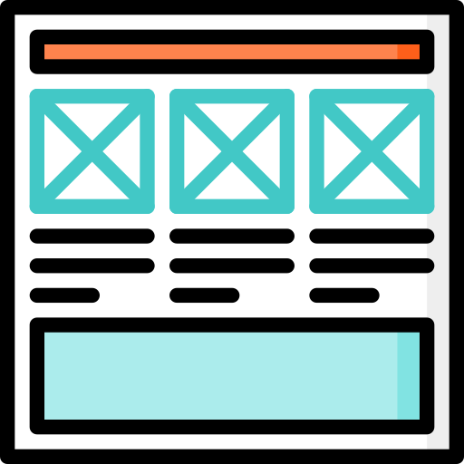
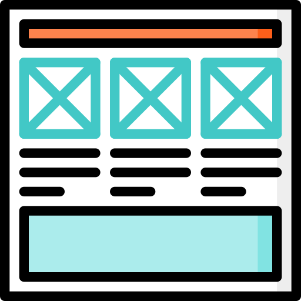

I have learned to become obsessed with the problem it allows me to
derive the most valuable insights for potential solutions.
A curious designer pursuing growth, I create visuals that are Human Centered which
creates
memorable experiences. Shifting from digital marketing to user-centered product design, I
focus
on the intersection of graphics, intuitive experiences, and strategic solutions that effectively
communicate brand stories. By designing and building what the community needs, I gained a deeper understanding of designing within the constraints
of feasibility and effort.
I kick things off by pinpointing the project's core business needs, writing down requirements,
and getting a grasp of
the desired outcomes, timelines, and team expectations. Keeping the lines of communication open
with the team is
major focus. At this stage, I also begin sketching out initial thoughts on the puzzle we're about to
solve.
Define the Requirements
I identify core business need with discovery sessions.
I finalize the major requirements for the project.
I get idea of desired outcomes, timelines, and team expectations.
I keep on communicating as much as possible.
Discover the Issues
This is where I dig deep, gathering information, having conversations, and exploring the
details of the problem. I may
go through user feedback or find out why the current design is the way it is. If we don't have
enough money or time for
a comprehensive user research trip, I'll opt for casual interviews to avoid making decisions without a
clear
understanding.
Discover the Issues
I gather more information about the details of the problem.
I conduct user feedback sessions.
If required i will go for user interviews to dig deep in the design problem.
I keep on communicating as much as possible.
Interpret the Results
During the decoding phase, I figure out who our users are, what motivates them, and what challenges
they face. I create
personas, map out their journeys, draw storyboards, and formulate problem statements, either
creating new ones or
improving existing ones. This is also the time when we establish our project goals and the
metrics to gauge our success.
It's typically a revealing and enlightening process.
Ideate over Solutions
The ideation phase – my personal playground. I get everyone in on the brainstorming action:
developers, fellow
designers, stakeholders, even the friendly neighborhood customer support team. We let the ideas
flow freely, aiming for
quantity over quality at this stage.
Prototype
Now, it's the moment to turn those great ideas into reality. I build an interactive prototype, whether
it's
a polished
high-fidelity Figma design or a functional website, based on the project's pace and
testing
requirements.
Test, Iterate and Test Again
In the last phase, I thoroughly test our prototype with actual users. It could be a quick and
casual
assessment or a
comprehensive usability testingevent. The outcomes act as our guiding beacon, revealing areas
that
require refinement
and improvement. The key is to iterate and enhance until we achieve perfection.


 
